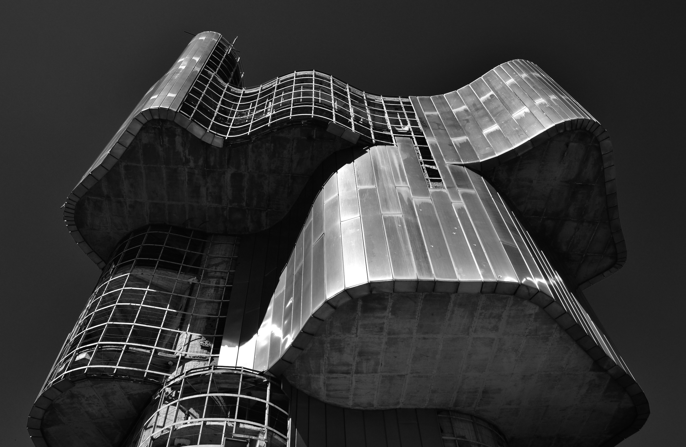

Zaboravljeni div brutalizma – Luka Grković [Fotografija]
13.02.2021.
Za zadatak arhitekture na trećoj godini fotografije Luka Grković se odlučio posvetiti brutalizmu na području Hrvatske. Ovih nekoliko slika prikazuju brutalistički spomenik ustanku naroda Banije i Korduna koji i nakon 40 godina ponosno stoji na Petrovcu, vrhu Petrove gore.

Mentori kolegija doc. art. Mirko Pivčevič i struč. sur. Vicko Vidan.

 Knjiga je dostupna u PDF formatu i u tiskanom izdanju u četiri jezika, za više o knizi kliknite smajlić
Knjiga je dostupna u PDF formatu i u tiskanom izdanju u četiri jezika, za više o knizi kliknite smajlić